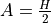
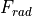
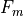
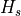
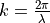
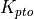
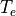

Terminology¶
| Term | Definition |
|---|---|
| Added Mass |  |
| BEM | Boundary Element Method |
| BEMIO | Boundary Element Method Input/Output |
| BS | Bretschneider Wave Spectrum |
$CASE |
WEC-Sim case directory |
| Heave (Z) | Motion along the Z-axis |
| JS | JONSWAP Spectrum |
| Pitch (Ry) | Rotation about the Y-axis |
| PM | Pierson-Moskowitz Specturm |
| PTO | Power Take-Off |
| Radiation Damping |  |
| Roll (Rx) | Rotation about the X-axis |
$SOURCE |
WEC-Sim source code directory |
| Surge(x) | Motion along the X-axis |
| Sway (Y) | Motion along the Y-axis |
| Wave Excitation |  |
| Yaw (Rz) | Rotation about the Z-axis |
Variables¶
| Variable | Definition |
|---|---|
 * * |
Wave amplitude (m),  |
|
Frequency dependent radiation added mass (kg) |
 |
Added mass at infinite frequency (kg) |
|
Frequency dependent radiation wave damping (N/m/s) |
 |
Morison element coefficient of added mass |
 |
Quadratic drag coefficient |
 |
Mooring damping matrix (N/m/s) |
 |
PTO damping coefficient (N/m/s) |
 |
Linear (viscous) damping coefficient (N/m/s) |
 |
Incident wave (m) |
 |
Wave frequency (Hz) |
 |
Net buoyancy restoring force (N) or torque (N.m) |
|
Wave excitation force (N) or torque (N.m) |
|  | Wave radiation force (N) or torque (N.m) |
 |
Power take-off force (N) or torque (N.m) |
 |
Morison element force (N) or torque (N.m) |
 |
Damping or friction force (N) or torque (N.m) |
|  | Mooring connection force (N) or torque (N.m) |
 |
Gravity (m/s/s) |
 |
Water depth (m) |
 |
Wave height (m) |
|  | Significant wave height, mean wave height of the tallest third of waves (m) |
 |
Spectrally derived significant wave height (m) |
 |
Wave number (rad/m),  |
 |
Linear hydrostatic restoring coefficient (N/m) |
 |
Mooring stiffness matrix (N/m) |
|  | PTO stiffness coefficient (N/m) |
 |
Wave length (m) |
 |
Mass of body (kg) |
| Spectral moment of k, for k = 0,1,2,… | |
 |
Wave frequency (rad/s),  |
 |
Wave phase (rad) |
 |
Ramp function |
 |
Water density (kg/m3) |
 |
Simulation time (s) |
 |
Ramp time (s) |
 |
Wave direction (Degrees) |
|  * | Energy period (s) |
 |
Peak period (s) |
 |
Translation and rotation displacement vector (m) or (rad) |
Note
This section is a work in progress, * means may not be used in WEC-Sim doc